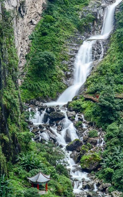

云南大理
大理白族自治州，首府驻大理市，是云南的16个地级行政区之一 ，地处云南省中部偏西，海拔2090米，东邻楚雄州，南靠普洱市、临沧市，西与保山市、怒江州相连，北接丽江市。地跨东经98°52′～101°03′，北纬24°41′～26°42′之间，东巡洱海，西及点苍山脉，辖大理市和祥云、弥渡、宾川、永平、云龙、洱源、鹤庆、剑川8个县以及漾濞、巍山、南涧3个少数民族自治县，是中国西南边疆开发较早的地区之一。
地处低纬高原，四季温差不大，干湿季分明，以低纬高原季风气候为主，境内以蝴蝶泉、苍山、洱海、大理古城、崇圣寺三塔等景点最有代表性。
历史沿革
大理历史悠久，是云南最早文化发祥地之一。据文献记载，4世纪白族祖先就在这里繁衍生息，散布了许多氏族部落，史书中称为“昆明之属”，他们创造了灿烂的新石器文化。
前221年， 秦朝开始经营西南，在西南地区建立行政机构，自此开始中央王朝对大理的统治。
汉元封二年（公元前109年），西汉王朝发巴蜀兵数万人击劳浸、靡莫，“以兵临滇”，“滇王”降汉，西汉王朝在“滇王”统治区设置了益州郡。同年，汉王朝派郭昌、卫广往击大理地区阻挡汉使的“昆明”部落。元封四年（公元前107年）和元封六年（公元前105年），郭昌又两次率兵往击“昆明”部落，“后数年，复并昆明地”，在大理地区设置了叶榆、云南、邪龙、比苏4县，属益州郡管辖，从此大理地区正式纳入汉王朝的疆域。
东汉时期，大理地区隶属于永昌郡，原西汉时设置的叶榆、邪龙、云南、比苏四县不变，并新设置了博南县（今永平县）。
公元220～280年，今云南、贵州和四川西南部被称为南中，为蜀国的一部分。
公元265年西晋王朝建立，为了加强对云南的统治，泰始七年（271年）晋王朝把蜀汉设立的南中四郡分化出来，设立宁州。
南朝时期，中原正处于封建割据的局面，云南相继为宋、南齐、梁、北魏、西魏、北周统治。从当时云南的行政建置看，虽然朝廷更迭频繁，但基本上沿袭了西晋时期的建置体制，即州、郡、县三级制，州为宁州，郡、县的设置变化较大。
公元479年，肖齐王朝继刘宋王朝统治宁州，在肖齐王朝统治的23年内，先后派了四个宁州刺史和最后一个益、宁二州刺史。据《南齐书·州郡志》载，今大理州地分隶于宁州之云南郡、东河阳郡、西河阳郡、永昌郡。云平（宾川）、邪龙（巍山、南涧、漾濞）2县属云南郡；东河阳（大理市凤仪）、叶榆（大理市喜洲）2县属东河阳郡；比苏县（云龙）属西河阳郡；博南县（永平）属永昌郡。
唐朝对大理地区的经营始于武德四年（621年），唐遣使到洱海地区招抚“昆明”蛮诸部。武德七年（624年），州都督府长史韦仁寿将兵五百人，到西洱河，“承制置八州十七县，授其豪帅为牧宰”。
新中国成立后，于1950年2月1日，大理专员公署建立，辖下关、大理、凤仪、邓川、宾川、祥云、弥渡、蒙化、云县、缅宁、顺宁（凤庆）、永平、漾濞、云龙、洱源15县市。
1956年，云县、缅宁、顺宁3县划归临沧专区，丽江专区的鹤庆、剑川2县划归大理专区。
1956年11月22日，建立大理白族自治州，下关定为自治州首府。
1958年，州内县级行政区划进行了大幅度调整，全州辖1市、4县、1自治县。撤销云龙县，并入永平县；撤销下关市及大理、凤仪、漾濞3县，合并设立大理市；撤销宾川、弥渡2县，并入祥云县；撤销邓川、洱源2县，并入剑川县；撤销巍山彝族自治县、永建回族自治县，合并成立巍山彝族回族自治县。
1961年，撤销大理市，恢复下关市及大理（含凤仪）、漾濞、洱源（含邓川）、云龙、弥渡、宾川6县建置，全州辖有1市、10县、1自治县。
1983年，撤销下关市、大理县，合并设立大理市。1985年，漾濞县改为漾濞彝族自治县。至1988年，全州辖1市、8县、3自治县。即：大理市、漾濞彝族自治县、祥云县、宾川县、弥渡县、南涧彝族自治县、巍山彝族回族自治县、永平县、云龙县、洱源县、剑川县、鹤庆县。首府驻大理市。
2000年止，大理白族自治州辖1市11县，即：大理市、鹤庆县、漾濞彝族自治县、祥云县、宾川县、弥渡县、南涧彝族自治县、巍山彝族回族自治县、永平县、云龙县、洱源县、剑川县。
2016年11月22日，大理各族人民在大理市全民健身中心广场共同庆祝大理白族自治州建州60周年。
地理环境
位置境域
大理州地处云贵高原与横断山脉结合部位，地势西北高，东南低。地貌复杂多样，点苍山以西为高山峡谷区。点苍山以东、祥云以西为中山陡坡地形。境内的山脉主要属云岭山脉及怒山山脉，点苍山位于州境中部，如拱似屏，巍峨挺拔。北部剑川与丽江地区兰坪交界处的雪斑山是州内群山的最高峰，海拔4295米。最低点是云龙县怒江边的红旗坝，海拔730米。
境内以老君山－点苍山－哀牢山一线的大断裂为界，构成两大部分。东部属扬子准地台区，西部属藏滇地槽褶皱区（又称三江区）。其东部扬子准地台区，西以洱海－红河深（大）断裂为界，往东延入楚雄州境，为扬子准地台西缘的一部分。其西部藏滇地槽褶皱区，是州境内西部及南部广大地区，东以洱海一红河深（大）断裂为界，西至怒江、澜沧江河谷，呈南北纵贯州境，点苍山上还有苍山十九峰。
水文
州内湖盆众多，面积在1.5平方公里以上的盆地有18个，面积共1871.49平方公里。占大理州总面积的6.6%。盆地多为线形盆地，呈带状分布，从西向东排列为6个带。第四纪山岳冰川遗址分布于洱海以西，永平以北的高山区，大理点苍山是中国最后一次冰期“大理冰期”的命名地。主要河流属金沙江、澜沧江、怒江、红河（元江）四大水系，有大小河流160多条，呈羽状遍布大理州。州境内分布有洱海、天池、茈碧湖、西湖、东湖、剑湖、海西海、青海湖8个湖泊。
气候特征
大理州地处低纬高原，在低纬度高海拔地理条件综合影响下，形成了低纬高原季风气候特点：四季温差小。较接近北回归线，太阳辐射角度较大且变化幅度小，形成年温差小，四季不明显的气候特点，“四时之气，常如初春，寒止于凉，暑止于温”，四季温差不大；热带季风气候，分雨旱季。大理州冬干夏雨，赤道低气压移来时（冬半年11月至次年4月）为干季雨量仅占全年降雨量的5～15%，信风移来时（夏半年5～10月）为雨季降雨量占全年的85～95%；垂直差异显著。大理州由于地形地貌复杂，海拔高差悬殊，气候的垂直差异显著。气温随海拔高度增高而降低，雨量随海拔增高而增多。河谷热，坝区暖，山区凉，高山寒，立体气候明显；气象灾害多。由于季风环流的不稳定性和不同天气系统的影响，大理州气象灾害较多。常见的气象灾害主要有干旱、低温、洪涝、霜冻、冰雹、大风等。
自然资源
土地资源
非金属矿有驰名中外的大理石大型矿床。据初步勘查，仅苍山小岑峰一带大理石储量就达1亿立方米。还有储量丰富的石灰石、石英砂、萤石、粘土、煤等；金属矿有铂、钯、锰、锑等。其中鹤庆县北衙新发现超大型金矿，已累计查明黄金资源量127吨，估算共生铁矿石5000万吨，共伴生银3000吨，铜金属量20万吨。专家认为，探明的金矿资源说明云南金资源也已经位居西南第一位。
水资源
水资源有淡水湖泊洱海，丰富的苍山泉水和地下水；地热资源有温泉仅塘子铺温泉，水流量就达1310立方米/小时，水温达76.5℃。地下水径流量以最枯流量资料的75%计算也达2.26亿立方米。
土地资源
大理州土地面积29459平方千米，山地占大理州总面积的80%以上。现有耕地183161公顷，其中，田90458公顷、地92703公顷。园地面积13333.33公顷，占土地总面积的0.5%，是柑橘、苹果、桃、梅、梨、茶、桑等生产基地；水域面积55333.33公顷，占土地面积的1.9%左右。大理州土地使用状况：林地约占60%、牧地占20%、耕地占11.2%、其它用地占8.8%。土壤类别分属于8个纲、13个土类、23个亚类、76个土属、236个土种。紫色土类占土地总面积的31.75%，红壤土占27.7%。
旅游
综述
大理州国家级风景名胜区，总面积1016平方公里。由苍山洱海风景区、巍宝山风景区、石宝山风景区、鸡足山风景区、茈碧湖风景区组成。
苍山洱海风景区由气势恢弘的苍山、秀丽的高原明珠洱海及山海之间自然与人文完美结合的田园风光构成。有世界知名的唐代三塔、蝴蝶泉、南诏德化碑、三月街、喜洲白族民居等文化景观，还有丰富多样的生物资源景观、独特罕见的天气景观、地质景观等。
巍宝山风景区位于大理市南50公里的巍山县，主要由全国闻名的道教名山巍宝山和国家历史文化名城巍山古城组成。巍山是南诏历史的发祥地，巍宝山古建筑群被列为省级文物保护单位，有数十座道观古建筑，其中青霞宫、长春洞、培鹤楼等具有较高的历史、文化、艺术价值。进入景区可感受到浓厚的道教文化和传统的彝族风情。巍山古城保留有完整的明清城池格局和古街巷、古民居风貌，延续了较好的民族历史文化生态。
石宝山风景区位于大理市北135公里的剑川县，由石钟山石窟、宝相寺和海云居三个游览区组成。景观类型以石窟雕刻、宗教古建、丹霞地貌和森林景观为主。石钟山石窟是国家重点文物保护单位，以南诏大理国时期的造像雕刻艺术闻名国内外。以宝相寺为代表的古建筑群依山附崖，险中见奇，被誉为“云南的悬空寺”。石宝山地质属第三纪层，石质为红色砂岩、砾岩，风化球状的砂岩形象独特，被誉为“石宝”。在此举行的一年一度的石宝山歌会，展示了风情浓郁的白族歌舞和独特的白族文化。
鸡足山风景区位于大理市东60公里的宾川县。鸡足山是我国的佛教名山，与著名的四大佛教名山齐名，在东南亚一带影响较为深远。以雄、奇、幽、秀的山岳风光、丰富的植物景观和浓厚的佛教文化而闻名，其中以“绝顶四观”和“八景”最为著名。主要景点有金顶寺、伽叶殿、祝圣寺、佛塔寺、九莲寺、华首门、玉龙瀑布、空心树、杜鹃长廊等。
茈碧湖风景区位于大理市北70公里的洱源县，以地热温泉和高原湖泊景观为主。湖区面积8平方公里，湖面如镜，明净清丽，湖上除领略湖光山色外，可看水花树奇观。湖北有环境清幽的梨园，仿佛世外桃源。湖周围有星罗棋布的温泉，丰富的温泉休闲疗养服务给风景区增添了较大的吸引力。
洱海
洱海，古称昆明池、洱河、叶榆泽等。因其状似人耳，故名洱海。它南北长42公里，东西宽3－9公里，湖岸线长117公里，面积250多平方公里；平均水深10.5米，最深21.5米，蓄水量28.8亿立方米，面积与蓄水量均列云南湖泊第二，在全国淡水湖中居第7位。洱海南有弥洱河等注入，西纳苍山十八溪水，东汇波罗江、挖色河，南面的西洱河是惟一出海门，经漾濞江绕入澜沧江，洱海属构造湖，湖岸东西多崖壁，北西南三面为沙洲。
洱海水深清澈，宛若无瑕的美玉，秀丽无比，洱海是中国著名的高原湖泊，早在汉代它已名载史册。公元前122年，张骞出使西域回到长安，在向汉武帝汇报西域情况时，他说在大夏国（今阿富汗）曾看到蜀布，经了解是从身毒（印度）贩运去的。他极力进言：从蜀郡通身毒，道路近便，有利无害。根据张骞的建议，汉武帝派使者到西南夷寻求通身毒之路。道路都为洱海附近的昆明族所阻，最终未能通身毒。公元前120年，汉武帝因使者阻于昆明族之事，征调人力在首都长安开挖了一个人工湖，名之为“昆明湖”，训练水军，准备征讨洱海地区的昆明族。当然，汉武帝征服云南高原其在长安“昆明湖”训练的水军不可能派上用场。但是，这段“汉习楼船”的典故却永留在司马迁的《史记》中。后来，清朝乾隆皇帝因景仰汉武帝开疆托土的功业，把北京颐和园西湖也改名为“昆明湖”。
“洱海月”是大理四大名景之一。明代诗人冯时可《滇西记略》说：洱海之奇在于“日月与星，比别处倍大而更明”。如果在农历十五，月明之夜泛舟洱海，其月格外的亮、格外的圆，其景令人心醉：水中，月圆如轮，浮光摇金；天空、玉镜高悬，清辉灿灿，仿佛刚从洱海中浴出。看着，看着，水天辉映，你竟分不清是天月掉海，还是海月升天。此外，洱海月之著名，还在于洁白无瑕的苍山雪倒映在洱海中，与冰清玉洁的洱海月交相辉映，构成银苍玉洱的一大奇观。
鹤庆银都水乡新华旅游村
鹤庆银都水乡新华白族旅游村是依原生态自然村落建成的国家AAAA级景区。新华村原名石寨子，坐落于云鹤古城以北7公里处，距丽江机场12公里，村子总面积16.88平方公里，全村有1149户人家，5227人，白族占总人98.5%，是一个典型的白族寨子。新华村是一个“小锤敲过一千年”的古老村寨，早在南诏时期，先辈们即以手工艺品加工制作养家糊口，“鹤川匠人”的美名传誉海外。
大理古城
大理古城简称叶榆，又称紫城。 位于云南省西北部，横断山脉南端，居于苍山之下，洱海之滨，中心位置位于北纬25°41′26″ ，东经100°9′45″，古城占地面积3平方公里。大理古城为方形城池，每边约1.5公里，城区总面积约3平方公里。古城四周有城墙，城墙内层为夯土，外披石块、大砖各一层，城设四门及四门楼。自明代建城以来历600多年，古城的规模、布局基本无大的改变。城内街道纵横、交错有致，为典型的棋盘式布局。城内保存有大量的清、民国时期的民居及武庙、杜文秀帅府、西云书院、考试院、城隍庙、清真寺、天主教堂、基督堂等古建筑。大理古城现已成为大理旅游发展的核心景点。
西门街明代白族古建筑群
西门街明代白族古建筑群位于云南省剑川县金华镇西门街，由何可及故居、张勉宅院、昭宗祠组成。何可及故居始建于明天启四年（1624年），典型四合院，由门楼、正房和东西厢房组成，占地面积364.97平方米。张勉宅院明弘治十三年（1500年）为两进院，由正房、过厅、南厢房组成，占地面积404.61平方米。昭宗祠始建于明崇祯二年（1629年），为三进院，由祠堂、过厅、门楼组成，抬梁穿斗混合式木构架，单檐硬山顶，占地面积1086.2平方米。三处建筑均为明代中晚期的建筑遗存，特色浓郁。2006年5月25日被国务院公布为第六批全国重点文物保护单位。
大理挖色镇
古称鲁川，挖色。位于洱海东岸，地处大理市中东部，北与双廊镇接壤，南临海东镇，东与宾川县鸡足山镇毗邻，其三面环山，一面临海，西对如屏苍山而遥望大理古城，东通佛教圣地鸡足山而隐窥金顶，自古即为洱海东岸一个鱼米之乡，洱海地区历史渊源久远的白族外乡文化发源地之一。
苍山
苍山又名点苍山。苍山山脉由十九峰自北向南连脊屏列组成最高点海拔4122米（马龙峰），最低点海拔1360米（漾濞江与西洱河交汇处），4000米以上山峰有七座。苍山东坡两峰夹一溪，形成了十九峰夹十八溪的梳状地貌。西坡的鸡邑铺有温泉出露，水温约为36℃。苍山东坡的洱海盆坝区年均气温15℃，西坡漾濞江河谷区年均气温16.1℃，年降雨量均在1050毫米左右。
剑川钟山石石窟
钟山石石窟位于剑川县南部的石钟山。石钟山古时候称为中山，因有形如巨钟的红丹霞岩，故称为石钟山。石窟分石钟寺、狮子关和沙登箐三个片区，共计16窟139尊造像，是我国最南方的一个石窟群，有“南天瑰宝”之称。石钟山石窟在内容上可分为南诏王室造像、外国人造像及原始崇拜造像等几类，1961年3月4日，被国务院公布为第一批国家级重点文物保护单位。现已成为大理风景名胜区的主要景点之一。
佛图寺塔
佛图寺塔于大理市下关镇阳皮村北侧的佛图寺前，塔高30.7米。为十三级密檐方式形砖塔，塔基为二层台方形基座，下层台边长19.7米，高1.2米，用毛石垒砌，条石压沿。搭身内容，内壁为筒体结构，直通至十二级。外壁塔身壁身整体呈抛物线状，第一级方长4.5米，直砌。“蛇骨塔”经1981年维修实测后，定名为“佛图寺塔”塔西面的佛图寺，现存大殿、南北厢房和过厅，为清代建筑。1983年1月，佛图寺塔被云南省人民政府公布为第二批重点文物保护单位；2006年5月25日，被国务院公布为第六批全国重点文物保护单位。
太和城遗址
南诏故都太和城遗址，位于大理市下关镇太和村，地处下关（南诏时期的龙尾关）至大理之间的苍山佛顶峰麓，南距下关6公里，北与大理古城相隔7公里。这里是大理坝子中苍山与洱海之间陆地距离较短的咽喉要地，是由龙尾关进入大理古城的必经要道。《南诏德化碑》碑高3.02米，宽2.27米，厚0.58米。青石质，正书，文字剥蚀严重。
崇圣寺
崇圣寺，东对洱海，西靠苍山，位于云南省大理古城北约一公里处，点苍山麓，洱海之滨。历史上有9位大理皇帝在崇圣寺出家，在金庸武侠小说《天龙八部》中称为“天龙寺” 。崇圣寺曾以五大重器（三塔、南诏建极大钟、雨铜观音像、三圣金像、“佛都”匾）闻名于世，但崇圣寺与另外的四大重器均毁于历代的战火及自然灾害 。1990年代，重建崇圣寺被提上日程。2003年8月8日，重建工程动工。2005年4月22日，总投资1．82亿元人民币的崇圣寺重建工程全部竣工 。其所属的崇圣寺三塔文化旅游区为国家AAAAA级旅游景区。崇圣寺主要景点有：寺前景点：崇圣寺三塔、大鹏金翅鸟广场 、南诏建极大钟 、雨铜观音殿。寺内景点：石雕 、大雄宝殿、药师殿 、护法殿、 弥勒殿 、十一面观音殿、 阿嵯耶观音阁 、山海大观石牌坊 、望海楼 、罗汉堂 、转经筒 、金刚杵、 财神殿、高僧殿、祖师殿。
蝴蝶泉
蝴蝶泉位于大理市喜洲镇周城村以北1公里处，滇藏公路西侧，苍山的云弄峰下，原名无底潭。公园内有郭沫若手书‘蝴蝶泉”石碑，左侧刻有郭沫若咏蝴蝶泉诗的手迹；碑的背面，刻着徐霞客游大理蝴蝶泉的一段日记。徐霞客在其游记中记述说：“泉上大树，当四月初即发花如峡蝶，须翅栩然，与生蝶无异。又有真蝶千万，连须钩足，自树巅倒悬而下，及于泉面，缤纷络绎，五色焕然。游人俱从此月，群而观之，过五月乃已。
蝴蝶泉公园，建有修蝴蝶楼、八角亭、六角亭、望海亭、月牙池、咏蝶碑，1985年12月建立了蝴蝶标本馆。
特色美食
白族“土八碗”
“土八碗”是白族传统宴席上一套典型的菜谱，有煮、炒、蒸、炸、煎、腌多种菜肴，色泽鲜艳，滋补健胃，老少皆宜。土八碗由八道热菜组成：添加红粬米的红肉炖；挂蛋糊油炸的酥肉；加酱油、蜂蜜扣蒸的五花三线肉千张；配加红薯或土豆的粉蒸肉；猪头、猪肝、猪肉卤制的干香；加盖肉茸、蛋屑的白扁豆；木耳、豆腐、下水、蛋丝、菜梗氽制的杂碎；配加炸猪条的竹笋。
大理砂锅鱼
大理洱海是云南横断水脉中蓄水量最大淡水湖泊。洱海自然资源丰富，仅鱼类就有十多种。
白族对鱼的食法和烹调技术颇具特色。在众多食法中，最具风味特色的是砂锅鱼。砂锅鱼集中了白族鱼味的精华，热烹热吃，配以豆腐等食物，味道鲜美，是大理白族款待宾客的佳肴。砂锅鱼的烹调方法是：把从洱海捕来的黄壳鲤鱼刮洗干净后，用毛巾擦去水分，于腹壁上擦抹精盐，腌10多分钟后，放进大理特制的砂锅里清炖，再加人泡豆腐、火腿、肉丸、玉兰片、猪蹄筋等十多种配料及调味品，把砂锅置于木炭火炉上烹炖而成。
乳扇
乳扇是一种呈扇形的乳制品，是洱源白族人民待客的一道上等菜。云南十八怪之“牛奶做成扇子卖”，指的就是“乳扇”。乳扇的食法很多，可生吃可熟吃，也可烧、炸、煎、煮等。用乳扇、烤茶、核桃面等泡制的白族三道茶。
生皮
火烧猪肉（多用臀部和后腿皮肉）和猪肝切成细丝，以葱、蒜、芫荽、炖梅、辣子面、酱油等为佐料，调蘸而食。此吃法民间称之为“吃生皮”。吃生皮的习俗，相传始于南诏时期。